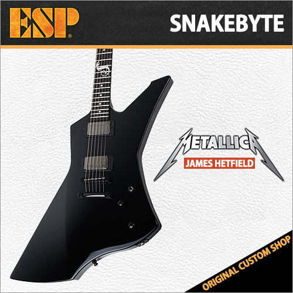

기타
기타의 역사
통기타 종류
일렉기타 종류
헤비쉐입
메탈을 위해 만들어진 특정 기타의 형태를 통칭하는 말로 생김새가 다양하며 소리도 다양하지만 대부분 '강한 출력'과 '이펙터와의 궁합', '저음과 고음 위주' 등 메탈에 잘 맞는 특징을 가지고 있다.
메탈에서도 속주, 솔로에서는 슈퍼 스트랫을 사용하지만 백킹은 헤비쉐입을 많이 사용 한다. 50년대말 깁슨을 필두로 발매되기 시작했다.

뒤로